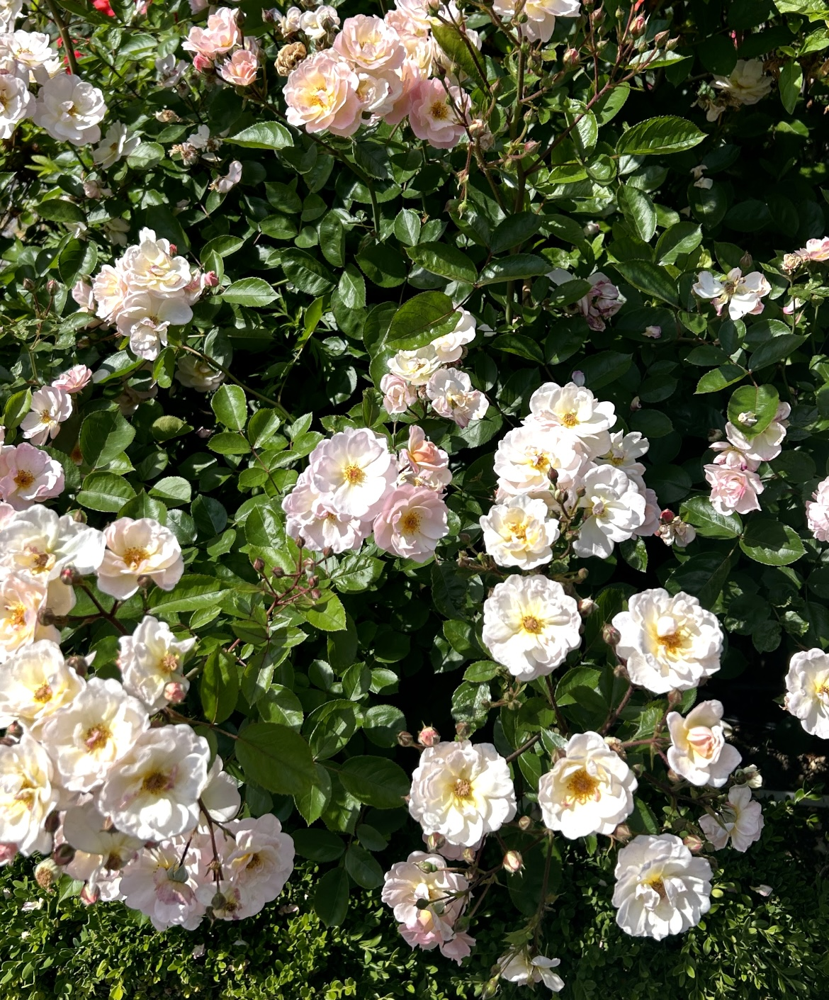
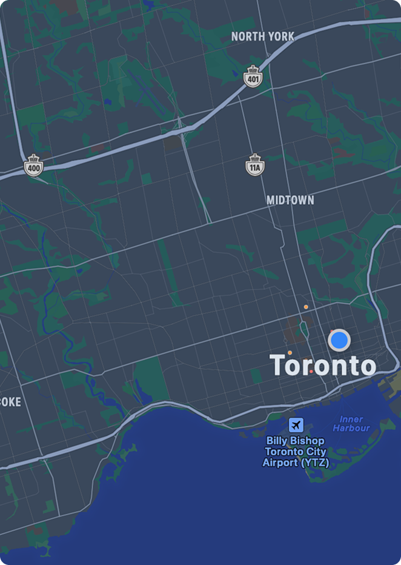
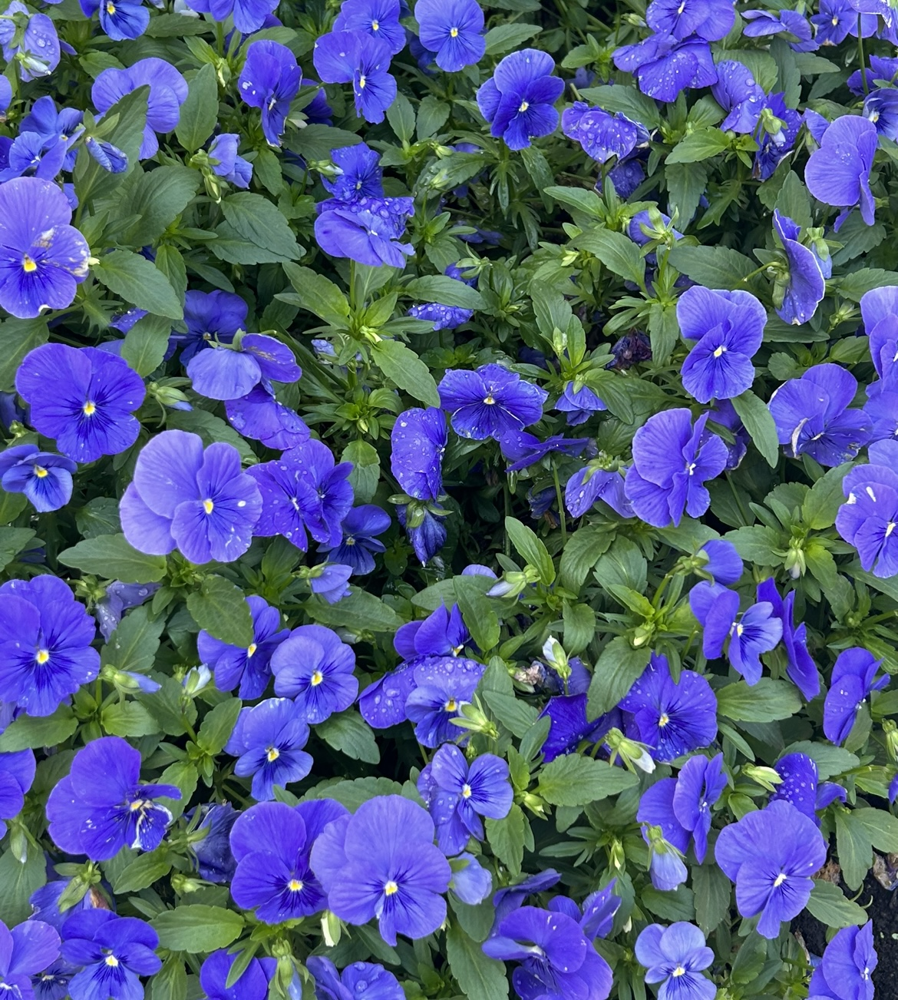

Discover Seasonal Blooms
Browse individual flower profiles to learn about growing seasons, sunlight needs, companion pairings, and whether each plant is pet-safe or toxic.

Find Blooms Near You
Explore seasonal flowers blooming around Toronto using our interactive map.

Try Companion Planting
Pick up to four flowers to see compatibility and simple companion suggestions for planters or garden beds.